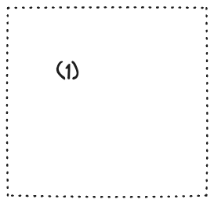
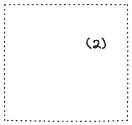
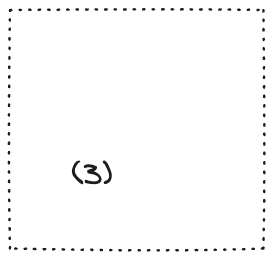
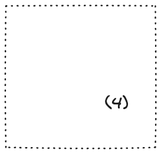

How it works:
- There are four images, each with a number: (1) through (4).
-
Each image is displayed briefly before fading into the next image.
- The fade-in/out animations are driven with pure CSS.
-
The animations are timed in such a way that at most two images are
visible at any time.